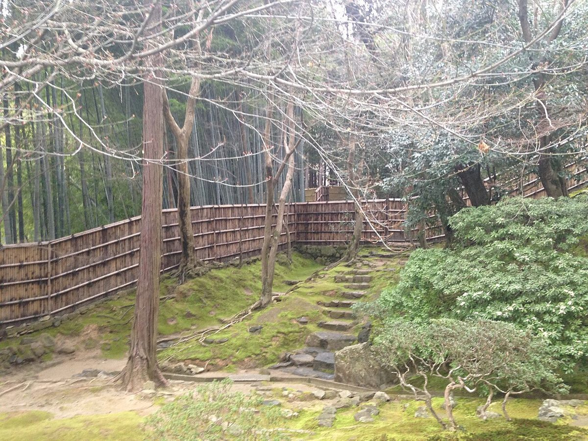
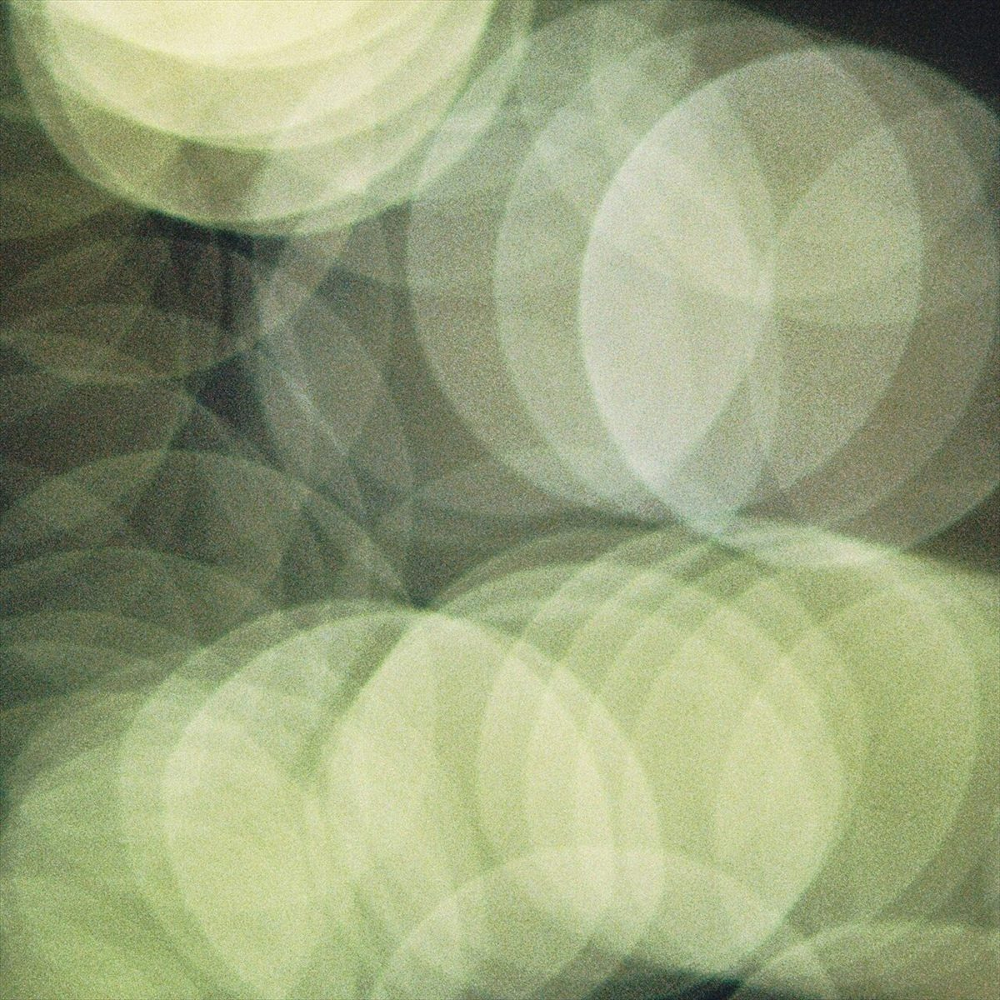

cafe てと
 イメージ
イメージ
cafe てと
イメージ
わかり次第、順次掲載します。お急ぎの方はお電話でご確認ください。
ふらっと寄って、ほっとひと息つける場所。そんな、カフェという場所の一般的な魅力をもとに、制作側で考えた仮のコンセプトです。お店の考えや方針ではありません。




写真はすべてイメージです。店舗の実際の様子・商品とは異なります。
営業時間や定休日などは、お電話またはInstagramでご確認ください。
掲載写真はフリー素材のイメージです。店舗の実際の様子・商品とは異なります。国外や撮影地不明の写真を含みます。